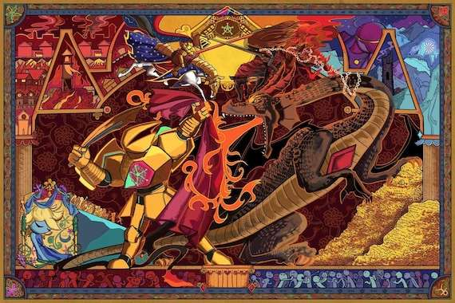

Bienvenidos a mi pagina donde hablaremos de la serie web indie llamada "Gildedguy"
Decidi hablar de esta serie por que me encanta la historia que cuenta en cada episodio que sale. ademas decidi esta serie indie en concreto por que desde mas chico la veia y aun sigue en produccion. y mi interes genuino por esta serie viene por parte de las historias de los antagonistas como del protagonista.

El primer dato interesante es: Aunque no se diga directamente, la historia de gildedguy se basa en situaciones que le pasan al creador (Michael) en la vida real, adaptandolo de una forma mas fantasiosa.
El segundo dato interesante es: Para un evento de animacion en 2025 presento "Gildedguy vs Violet" un cortometraje animado donde es una carta de amor hacia su pareja. Al final de su presentacion michael le pide matrimonio y su pareja corresponde con un "si", el publico estallo de emocion y los felicitaron.
La serie de este creador a dejado un gran impacto en mi vida, demostrando que con esfuerzo, sacrificios y determinacion se puede seguir adelante a pesar de las situaciones. mis episodio favorito es el 8 ya que le pone fin al primer arco del personaje teniendo un cierre epico y digno. aprendi tambien que Michael es un tipazo que a pesar de todos los malos momentos que paso siguio adelante a pesae de la duda y el miedo.